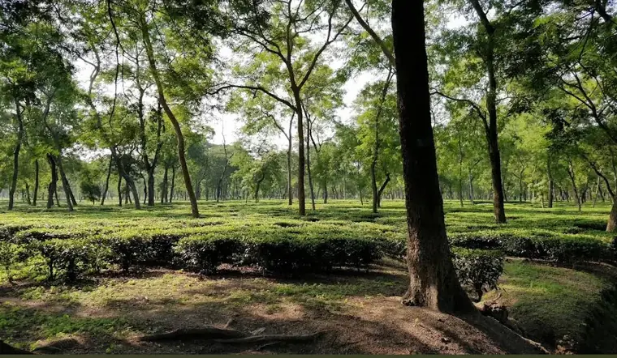
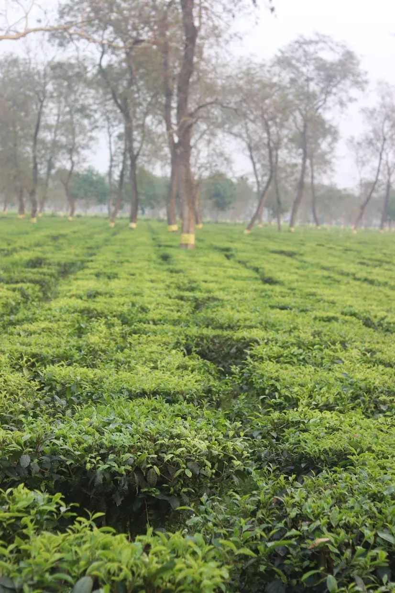
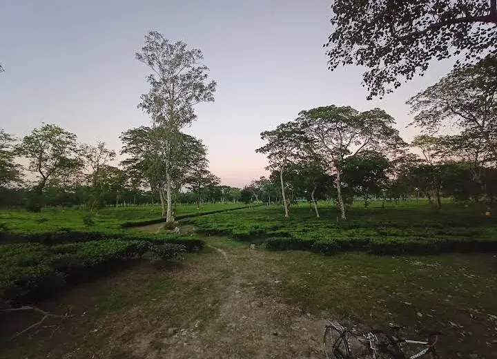
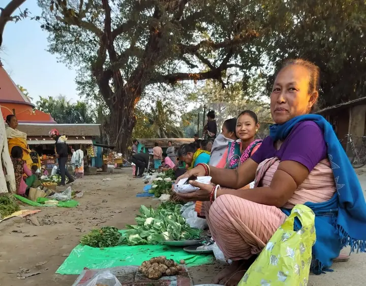
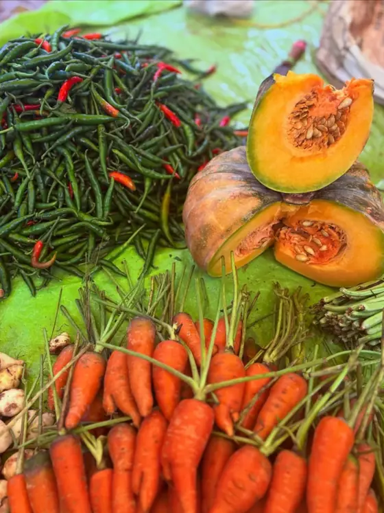
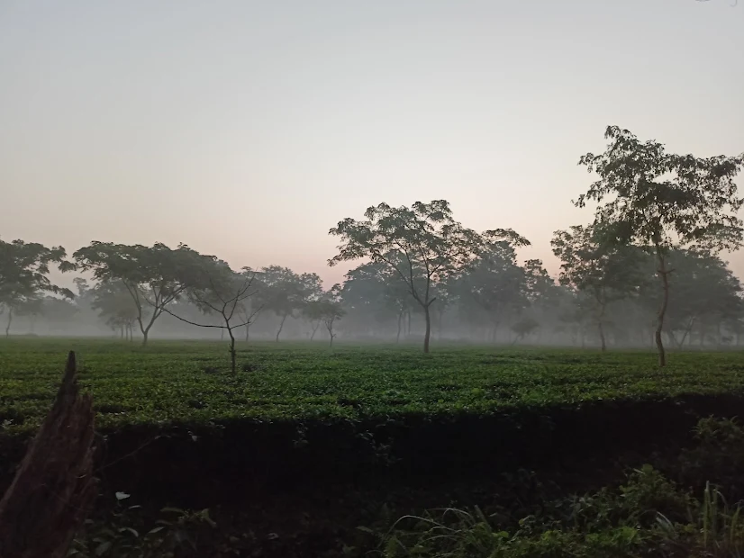
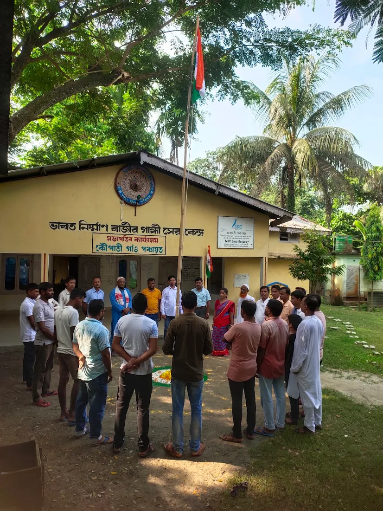
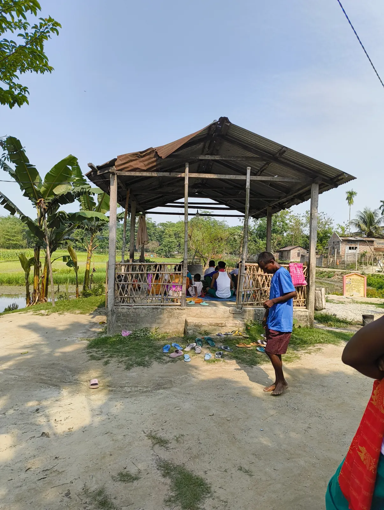
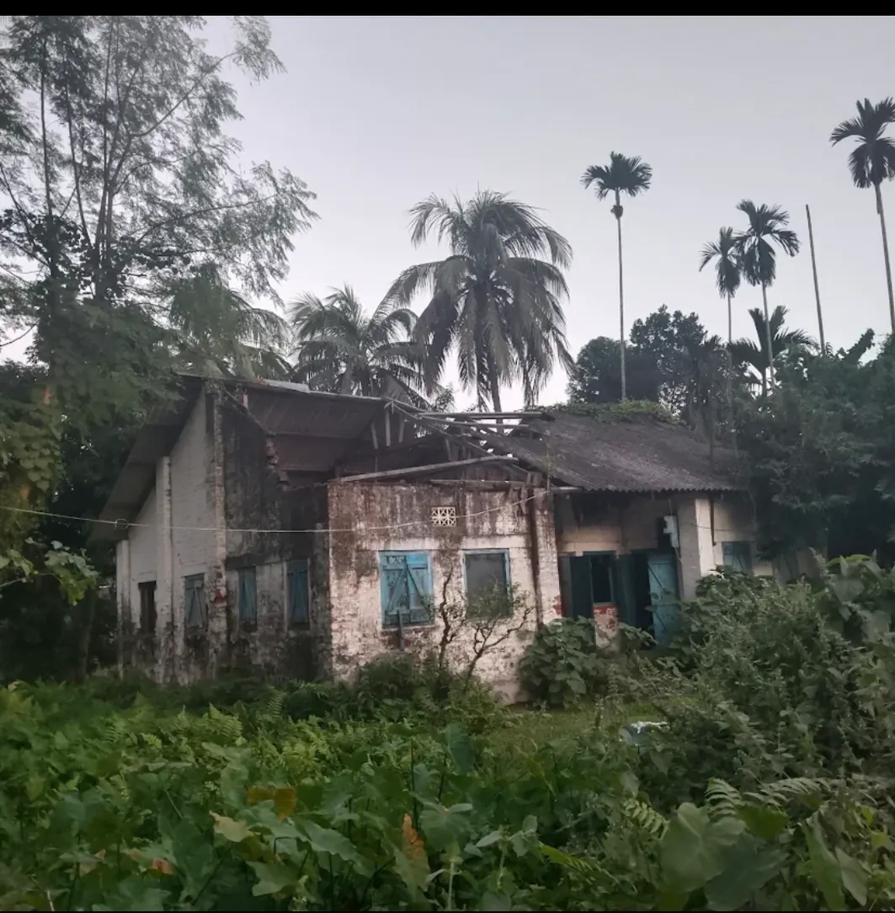
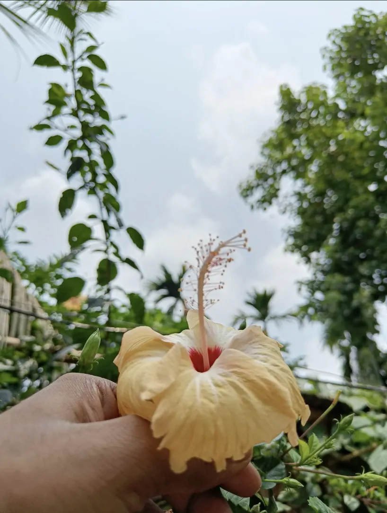

UDALGURI · ASSAM · INDIA
Discover Koupati
in Assam.কৌপাতি — অসমৰ সেউজীয়া সৌন্দৰ্য
Explore Koupati in Udalguri, Assam: discover the tea-estate surroundings, Sunday Market, village life, local culture and practical travel information.
Representative landscape photography; exact locations may not be verified.
USEFUL LOCAL INFORMATION
Find what you need
Quick links for visitors and the Koupati community.
Udalguri districtAssam, Northeast India
Green landscapesTea-garden and rural surroundings
Local storiesCulture, community and everyday life
Explore Koupati
Explore Koupati guides
Explore dedicated guides to the place, tea heritage, community life, culture and practical travel information.




Help improve this local guide
Share a story or correction ↗Your Koupati story matters.
Live nearby or visited recently? Share a local memory, photograph, or correction. Please send only information and images you have permission to share.
A slower pace. A greener view.
A little introduction
Welcome to Koupati
Koupati is associated with the Udalguri border region of Assam. Koupati Tea Estate and Koupati Sunday Market are in Udalguri district. Its rural surroundings, greenery and connection with the region's tea-growing landscape give the area a character worth discovering.
This independent local guide brings together destination information, photographs and useful travel pointers to help visitors learn more about Koupati before they arrive.
Discover local life →A regional legacy
Rooted in Assam's tea country
Tea is part of the landscape, economy and identity of Assam.
Kopati Tea Estate & its surroundings
Kopati Tea Estate is in Udalguri district, in Assam's tea-growing region. The gardens and their surrounding communities are part of a landscape shaped by generations of tea cultivation and rural life.
Tea estates are working agricultural properties. Visitors should seek permission from estate management before entering private plantation areas, taking photographs of workers or accessing estate facilities.
This page is an independent local introduction, not an official estate or government publication. Estate history, ownership and visitor access should be confirmed with the relevant management.
Beyond the scenery
Experience the real Koupati
A destination is also its people, routines, flavours and shared traditions.

Community & village life
Discover the local institutions, neighbourhoods and everyday community life that shape the area.

Local gathering places
Explore the public spaces and familiar meeting points that are part of rural life.

Village surroundings
Take time to appreciate the homes, trees and quieter scenes found around the locality.

Everyday rural life
Small details — gardens, animals and daily routines — tell a story of the countryside.
Before you set out
Plan your visit
A few practical reminders to make your journey smoother and more respectful.
Getting there
Use the map and directions link below to check the current route from your starting point. Road conditions and travel times can change.
When to explore
For outdoor photography, early morning and late afternoon often provide softer natural light. Check local weather before travelling.
Be a considerate visitor
Respect private property, ask before photographing people, avoid littering and follow instructions from estate staff and local authorities.
See road and railway transport options ↗
Please note: Distances, transport availability, public access, facilities and opening hours have not been independently verified here. Confirm details locally before making a special trip.
Learning in our community
Education in & Around Koupati
Discover 12 local schools and higher secondary institutions in Koupati and neighbouring villages.
Useful local information
Nearby villages, healthcare & police
Explore surrounding villages, hospitals, health centres and police stations serving the Koupati area.
Find your way
Explore Koupati on the map
Use the map to orient yourself and open Google Maps for current directions. The map pin is approximate and is not a verified destination marker. Confirm your exact destination locally before travelling.
Map tiles © OpenStreetMap contributors. The pin is approximate; confirm your exact destination locally.
Useful information
Frequently asked questions
Quick answers for people learning about Koupati.
Where is Koupati?
Koupati is in Udalguri district, Assam, India. Some older references may use Darrang, and postal administration can differ from district boundaries. Use the map and a current navigation service to confirm your route.
Can visitors enter Kopati Tea Estate?
Do not assume the working tea estate is open to the public. Contact estate management and obtain permission before entering private property or taking photographs.
What is a good time for photography?
Early morning and late afternoon often offer softer light. Weather, season and local conditions will affect the best time on a particular day.
Is this an official government tourism website?
No. Koupati is an independent local information and destination guide. It is not presented as an official government or tea-estate website.
How can I suggest an update?
You can suggest corrections through Koupati on Instagram or Koupati on Facebook. Please include a reliable source when possible.